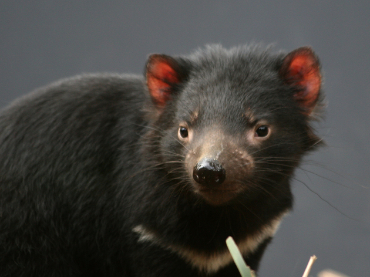

A foca-monge-do-Havaí é uma espécie de foca que habita o arquipélago havaiano.
Ela vem sofrendo muito com a poluição dos mares, caça predatória e o comércio ilegal, dentre outras razões que contribuem para o risco de extinção.
Estima-se que atualmente existem aproximadamente 1000 animais vivos. Segundo a IUCN a foca-monge-do-Havaí está classificada em perigo de extinção.
O asno-selvagem-africano é uma espécie criticamente ameaçada de extinção, segundo a classificação da IUCN.
Essa espécie é natural do continente africano e sofreu muitos anos com a destruição de seus habitats e a caça predatória. É considerado o ancestral do burro doméstico.
O atum-azul é uma espécie de peixe encontrada em maior parte no mar mediterrâneo. O consumo exacerbado desse peixe acarretou numa considerável diminuição da espécie.
Considerado o maior e mais valorizado atum do mundo, é muito apreciado na culinária japonesa como ingrediente para os sushis e sashimis.
Atualmente, de acordo com a IUCN, o atum-azul é classificado como criticamente ameaçado de extinção.
O camelo bactriano é uma espécie nativa da Ásia Central. Atualmente, a maioria das espécies vivas são domesticados pelas populações locais. Classificado como criticamente ameaçado de extinção pela IUCN, estima-se que atualmente existam menos de mil indivíduos vivos na natureza.
O diabo-da-Tasmânia é um marsupial nativo da ilha da Tasmânia, na Austrália. De acordo com as pesquisas e acompanhamento realizado pela IUCN, ele é considerado em perigo de extinção.
Os fatores que causaram sua diminuição são a caça ilegal, atropelamento, destruição de seu habitat e doenças.